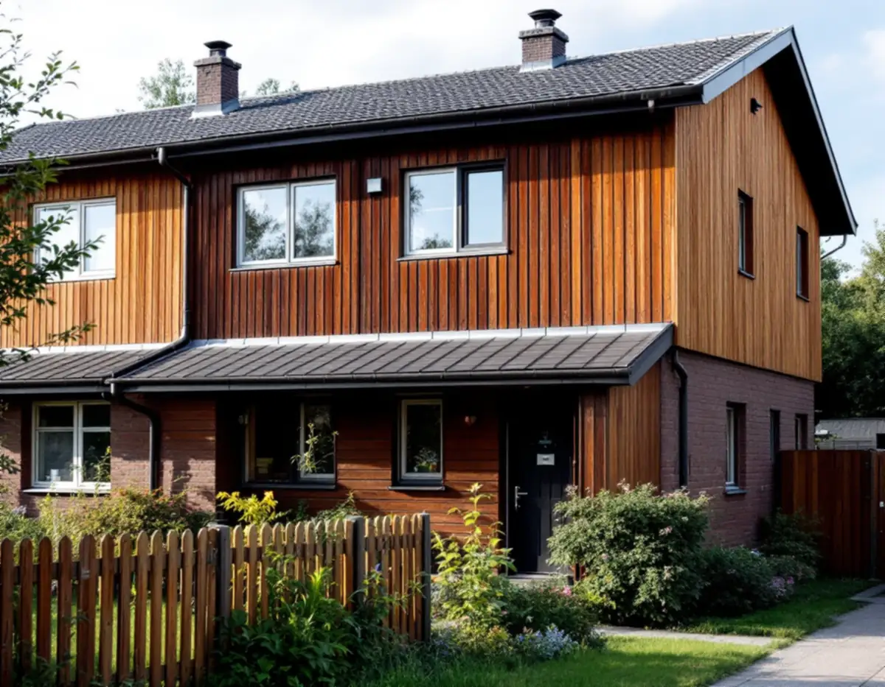
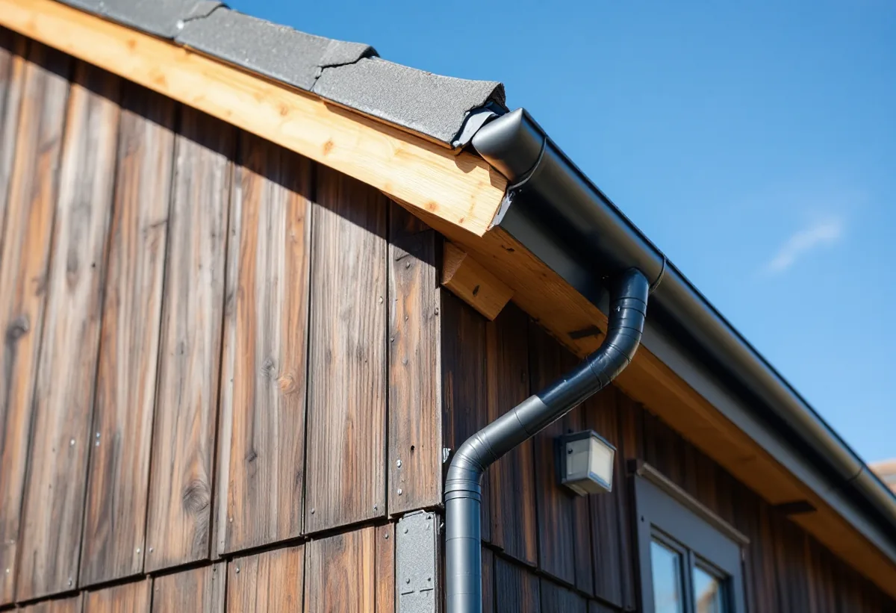
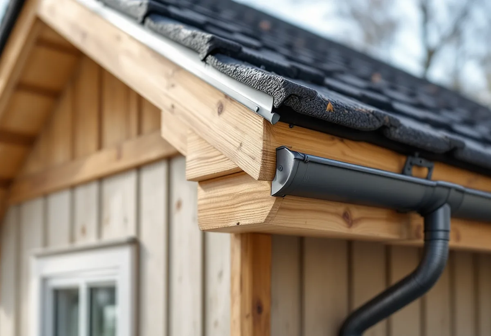

Platsbesök
Gratis genomgång av rännor, stuprör och tak.
Småhusen i Kista och Akalla byggdes för snart femtio år sedan, och hängrännor, stuprör och beslag från den tiden behöver ofta ses över. Geal Entreprenad AB utför plåtarbeten på radhus, kedjehus och villor i Kista och tar fram underlag när en förening ska besluta för en hel husgrupp.

Stadsmuseets Stockholms spår om Kista berättar att staden köpte marken på Järvafältet 1966 och byggde ut Kista åren 1975–1980. Bebyggelsen beskrivs som 2 500 lägenheter i flerbostadshus och omkring 780 småhus. Stadsdelen fick friare arkitektoniska former än de andra stadsdelarna på Järvafältet. Är rännor och beslag original har de alltså suttit uppe i runt femtio år.
Stadens vägledning Varsam utveckling av småhus- och villaområden beskriver småhusen i de storskaliga stadsdelarna som radhus och kedjehus, i Akalla också villor och atriumhus, och skriver att taken ofta var platta eller svagt lutande pulpettak. På sådana tak har takfotsplåt, vattenavrinning och anslutningar mot väggar stor betydelse, och det är där vi börjar vår genomgång.

Stadens områdesfakta för 2025 räknar 971 småhus i Kista, varav 404 bostadsrätter, och 671 i Akalla, varav 493 bostadsrätter. I ett bostadsrättsradhus säger bostadsrättslagen att medlemmen håller lägenheten i gott skick om inte stadgarna bestämmer något annat. Om tak, rännor och stuprör är ditt eller föreningens ansvar varierar därför mellan föreningar.
Ansvarar föreningen tar vi fram ett underlag för hela husgruppen: vad som behöver bytas nu, vad som kan vänta och hur arbetet kan delas upp. Ansvarar du själv tittar vi bara på ditt hus, men stämmer av färg och profil mot grannarna så att längan ser enhetlig ut.
Boverket skriver att du inte behöver bygglov för att byta taktäckningsmaterial på ett småhus, även om det nya taket ser annorlunda ut eller är av ett annat material. Innan du byter måste du kontrollera att taket klarar den nya belastningen, och ändringen ska göras varsamt och anpassas till omgivningen. Bygglov kan ändå krävas om detaljplanen har bestämmelser om utökad lovplikt. Boverket påpekar också att bestämmelser om minskad lovplikt i detaljplaner upphör att gälla den 1 december 2027, och att de åtgärderna då kräver bygglov.
I en husgrupp där alla tak är lika är anpassningen en fråga om att välja samma kulör och profil som grannarna. Vill föreningen byta material på alla tak samtidigt tar vi fram ett förslag med konstruktörens kontroll av lasterna. Mer om tak finns under takbyte i Kista.
En hängränna som lutar fel eller ett stuprör som lossnat leder vatten mot fasaden och grunden. Vi kontrollerar fall, skarvar och fästen, byter skadade delar och ser till att stuprören leder vattnet bort från huset. Fönsterbleck och takfotsplåt ses över i samma veva.
Skatteverket räknar rengöring av tak och hängrännor som rotarbete i ett småhus, liksom att reparera eller byta plåttak, hängrännor och stuprör. Behövs en byggnadsställning ingår också montering och nedmontering av den i det avdragsgilla arbetet. Mer om tjänsten finns under plåtslagare.

Gratis genomgång av rännor, stuprör och tak.
Stadgarna visar om du eller föreningen beställer.
Kulör och profil som passar husgruppen.
Ställning eller skylift vid behov.
Nya rännor, stuprör, bleck och beslag.
Vi provar avrinningen och går igenom arbetet.
Äger du huset ger Skatteverket rotavdrag för att reparera, rengöra eller byta ut plåttak, hängrännor och stuprör och för att montera ställning i samband med arbetet. Är radhuset en bostadsrätt ger plåtarbeten på tak, rännor och stuprör inget avdrag, eftersom de inte görs inne i bostaden.
Avdraget är högst 30 procent av arbetskostnaden och högst 50 000 kronor per person och år. Plåt och annat material ger inget avdrag, och Geal drar avdraget direkt på fakturan.
Hur många meter ränna och stuprör som ska bytas, takets form och höjd, om ställning behövs, bleck och beslag och om flera hus i gruppen görs samtidigt. Efter ett gratis platsbesök får du ett skriftligt kostnadsförslag.
Plåttak, hängrännor och beslag.
Plåtslagare i Stockholm →Takbyte, takbesiktning och plåtarbeten.
Takläggare i Kista →Låga tak, tätskikt och takbrunnar från 1970-talet.
Takrenovering i Kista →Gårdshus vid radhus och villor.
Attefallshus i Kista →Radhusen, föreningen och ventilationen.
Badrumsrenovering i Kista →Uterum, altan och föreningens tillstånd.
Byggföretag i Kista →Radhus, atriumhus och husgruppen.
Fasadmålning i Kista →Panel, skivor och isolering på radhus.
Fasadrenovering i Kista →Radhus och villor från 1970-talet.
Fönsterbyte i Kista →1970-talets radhusfönster.
Fönsterrenovering i Kista →Nya golv på betong i radhus och lägenheter.
Golvläggare i Kista →Golvslipning i bostadsrätt, hyresrätt och radhus.
Golvslipning i Kista →Småhus i förening och kök från 1970-talet.
Köksrenovering i Kista →1970-talets hus, asbest och ROT.
Målare i Kista →Garderober, väggar och dörrar i lägenheten.
Snickare i Kista →Platta tak och pulpettak.
Takbyte i Kista →Lägenheter och radhus från 1970-talet.
Tapetsering i Kista →Tillbyggnad vid radhus och villor.
Tillbyggnad i Kista →Renovera hela huset eller lägenheten.
Totalrenovering i Kista →